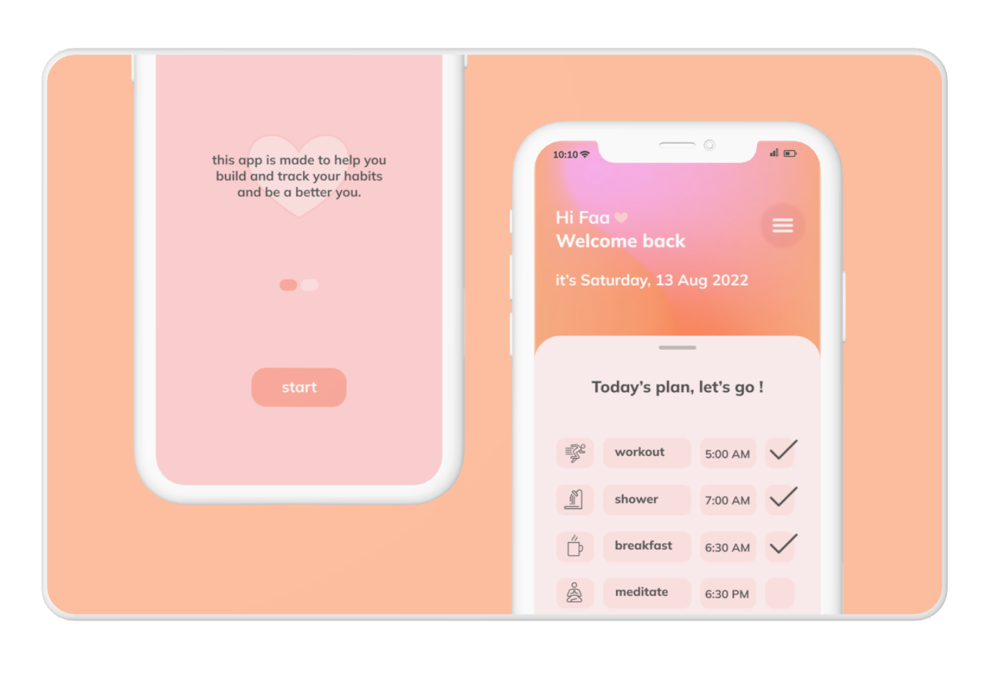

BetterMe: a mobile App
In this Ui Ux design case study, you will discover my thought
process and Ux journey to creating a practical, seamless Ui.
See full project
Logo Design
Designing Logos is a hobby of mine, I love contributing
in other people’s goals by creating a unique digital identity
for their services.
Let's work together!